Code
library(tidyverse)
library(sf)
library(AOI)
library(mapview)
library(rmapshaper)
library(knitr)
library(kableExtra)
library(rmarkdown)
library(ggplot2)
library(units)
library(gghighlight)Libraries:
Here we will prepare five tessellated surfaces from CONUS and write a function to plot them in a descriptive way.
First, we need a spatial file of CONUS counties. For future area calculations we want these in an equal area projection (EPSG:5070).
To achieve this:
get an sf object of US counties (AOI::aoi_get(state = “conus”, county = “all”))
transform the data to EPSG:5070
For triangle based tessellations we need point locations to serve as our “anchors”.
To achieve this:
generate county centroids using st_centroid
Since, we can only tessellate over a feature we need to combine or union the resulting 3,108 POINT features into a single MULTIPOINT feature
Since these are point objects, the difference between union/combine is mute
Make a voroni tessellation over your county centroids (MULTIPOINT)
Make a triangulated tessellation over your county centroids (MULTIPOINT)
Make a gridded coverage with n = 70, over your counties object
Make a hexagonal coverage with n = 70, over your counties object In addition to creating these 4 coverage’s we need to add an ID to each tile.
If you plot the above tessellations you’ll see the triangulated surfaces produce regions far beyond the boundaries of CONUS.
We need to cut these boundaries to CONUS border.
To do this, we will call on st_intersection, but will first need a geometry of CONUS to serve as our differencing feature. We can get this by unioning our existing county boundaries.
With a single feature boundary, we must carefully consider the complexity of the geometry. Remember, the more points our geometry contains, the more computations needed for spatial predicates our differencing. For a task like ours, we do not need a finely resolved coastal boarder.
To achieve this:
Simplify your unioned border using the Visvalingam algorithm provided by rmapshaper::ms_simplify.
Choose what percentage of vertices to retain using the keep argument and work to find the highest number that provides a shape you are comfortable with for the analysis:
Once you are happy with your simplification, use the mapview::npts function to report the number of points in your original object, and the number of points in your simplified object.
How many points were you able to remove? What are the consequences of doing this computationally? ##### 10,715 points. *Answer the second part of this question later…
Finally, use your simplified object to crop the two triangulated tessellations with st_intersection:
The last step is to plot your tessellations. We don’t want to write out 5 ggplots (or mindlessly copy and paste 😄)
Instead, lets make a function that takes an sf object as arg1 and a character string as arg2 and returns a ggplot object showing arg1 titled with arg2.
For this function:
The name can be anything you chose, arg1 should take an sf object, and arg2 should take a character string that will title the plot
In your function, the code should follow our standard ggplot practice where your data is arg1, and your title is arg2
The function should also enforce the following:
a white fill
a navy border
a size of 0.2
`theme_void``
a caption that reports the number of features in arg1
You will need to paste character stings and variables together.
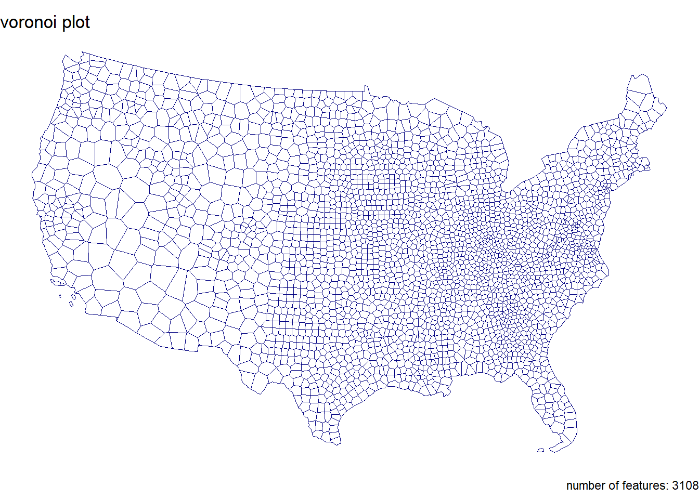
Step 1.7 Use your new function to plot each of your tessellated surfaces and the original county data (5 plots in total):
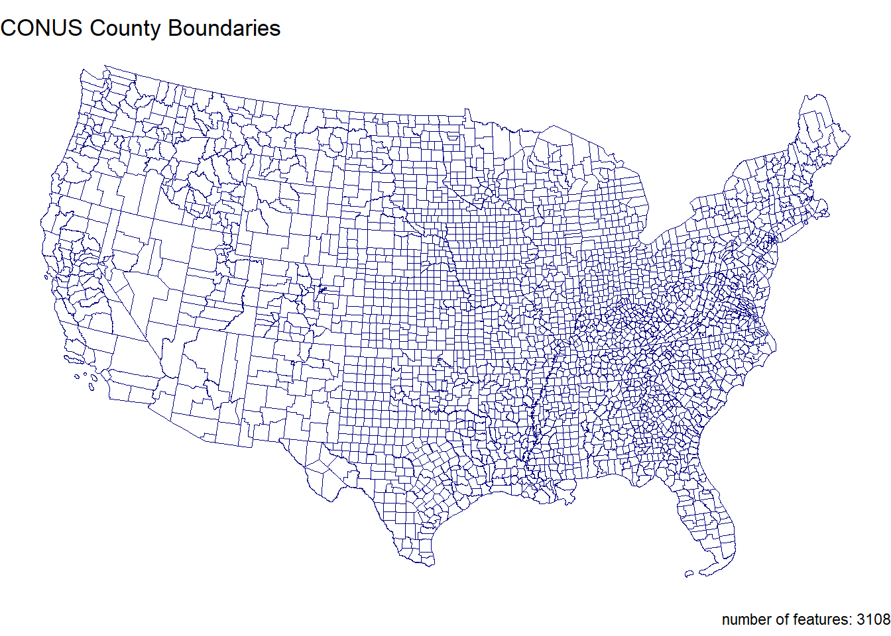
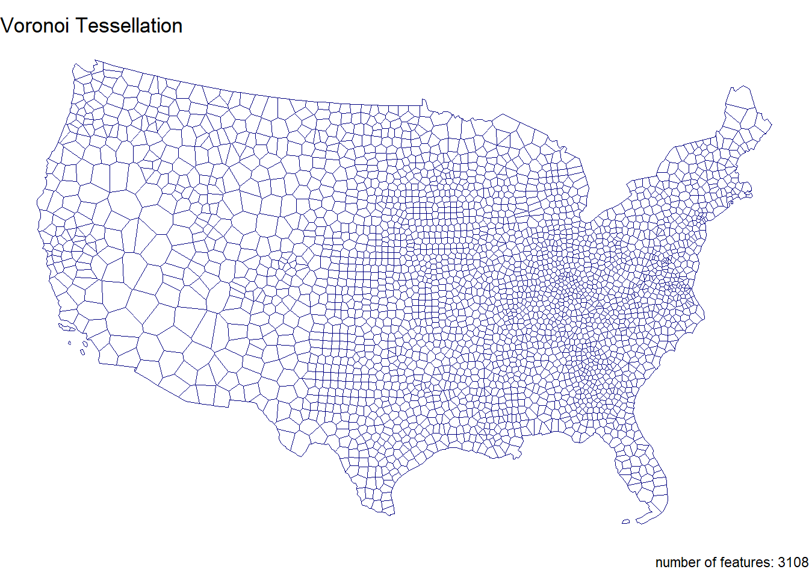
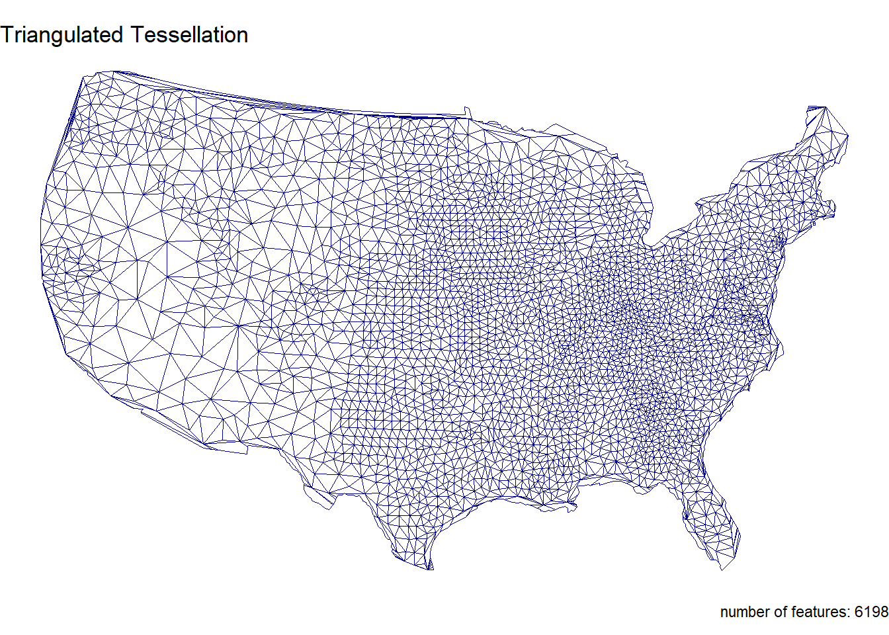
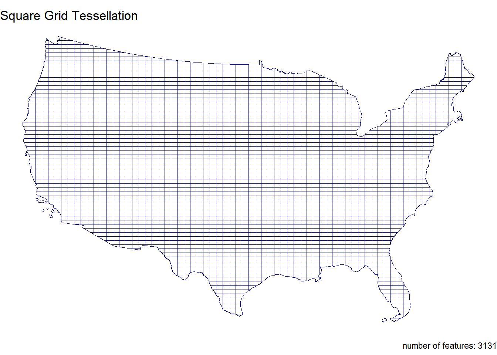
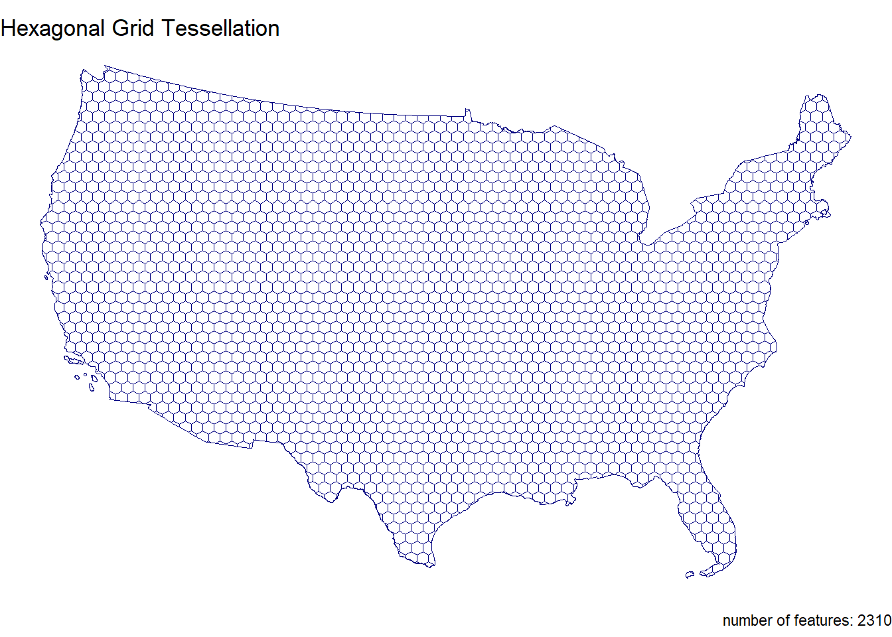
In this question, we will write out a function to summarize our tessellated surfaces. Most of this should have been done in your daily assignments.
First, we need a function that takes a sf object and a character string and returns a data.frame.
For this function:
The function name can be anything you chose, arg1 should take an sf object, and arg2 should take a character string describing the object
In your function, calculate the area of arg1; convert the units to km2; and then drop the units
Next, create a data.frame containing the following:
text from arg2
the number of features in arg1
the mean area of the features in arg1 (km2)
the standard deviation of the features in arg1
the total area (km2) of arg1
Return this data.frame
tess_sum <- function(sf_object, character_string) {
area_m2 <- st_area(sf_object)
area_km2 <- set_units(area_m2, "km^2") %>%
as.numeric()
data.frame(
description = character_string,
num_features = length(area_km2),
mean_area_km2 = mean(area_km2),
sd_area_km2 = sd(area_km2),
total_area_km2 = sum(area_km2)
)
}Use your new function to summarize each of your tessellations and the original counties.
description num_features mean_area_km2 sd_area_km2 total_area_km2
1 CONUS Summary 3108 2605.05 3443.712 8096496 description num_features mean_area_km2 sd_area_km2
1 Voronoi Tessallation Summary 3108 2604.426 2917.817
total_area_km2
1 8094557 description num_features mean_area_km2 sd_area_km2
1 Triangulated Tessellation Summary 6198 1290.368 1598.403
total_area_km2
1 7997700 description num_features mean_area_km2 sd_area_km2
1 Square Grid Tessellation Summary 3131 2585.914 572.79
total_area_km2
1 8096496 description num_features mean_area_km2 sd_area_km2
1 Hexagonal Grid Tessellation Summary 2310 3504.976 839.2546
total_area_km2
1 8096496Multiple data.frame objects can bound row-wise with bind_rows into a single data.frame
Once your 5 summaries are bound (2 tessellations, 2 coverage’s, and the raw counties) print the data.frame as a nice table using knitr/kableExtra.
| Description | Number of Features | Mean Area (km²) | SD Area (km²) | Total Area (km²) |
|---|---|---|---|---|
| CONUS Summary | 3108 | 2605.05 | 3443.71 | 8096496 |
| Voronoi Tessallation Summary | 3108 | 2604.43 | 2917.82 | 8094557 |
| Triangulated Tessellation Summary | 6198 | 1290.37 | 1598.40 | 7997700 |
| Square Grid Tessellation Summary | 3131 | 2585.91 | 572.79 | 8096496 |
| Hexagonal Grid Tessellation Summary | 2310 | 3504.98 | 839.25 | 8096496 |
Step 2.5 Comment on the traits of each tessellation. Be specific about how these traits might impact the results of a point-in-polygon analysis in the contexts of the modifiable areal unit problem and with respect computational requirements.
*** Come back to this question!!
The data we are going to analysis in this lab is from US Army Corp of Engineers National Dam Inventory (NID). This dataset documents ~91,000 dams in the United States and a variety of attribute information including design specifications, risk level, age, and purpose.
For the remainder of this lab we will analysis the distributions of these dams (Q3) and their purpose (Q4) through using a point-in-polygon analysis.
In the tradition of this class - and true to data science/GIS work - you need to find, download, and manage raw data. While the raw NID data is no longer easy to get with the transition of the USACE services to ESRI Features Services, I staged the data in the resources directory of this class. To get it, navigate to that location and download the raw file into you lab data directory.
Return to your RStudio Project and read the data in using the readr::read_csv After reading the data in, be sure to remove rows that don’t have location values (!is.na()) Convert the data.frame to a sf object by defining the coordinates and CRS Transform the data to a CONUS AEA (EPSG:5070) projection - matching your tessellation Filter to include only those within your CONUS boundary
Step 3.2 Following the in-class examples develop an efficient point-in-polygon function that takes:
points as arg1, polygons as arg2, The name of the id column as arg3 The function should make use of spatial and non-spatial joins, sf coercion and dplyr::count. The returned object should be input sf object with a column - n - counting the number of points in each tile.
Apply your point-in-polygon function to each of your five tessellated surfaces where:
Your points are the dams Your polygons are the respective tessellation The id column is the name of the id columns you defined
Lets continue the trend of automating our repetitive tasks through function creation. This time make a new function that extends your previous plotting function.
For this function:
The name can be anything you chose, arg1 should take an sf object, and arg2 should take a character string that will title the plot
The function should also enforce the following:
the fill aesthetic is driven by the count column n
the col is NA
the fill is scaled to a continuous viridis color ramp
theme_void
a caption that reports the number of dams in arg1 (e.g. sum(n))
You will need to paste character stings and variables together.
dam_plot <- function(object, title_text) {
object <- object %>%
filter(st_geometry_type(.) %in% c("POLYGON", "MULTIPOLYGON")) %>%
filter(!st_is_empty(.)) %>%
filter(st_is_valid(.)) %>%
filter(!is.na(n)) %>%
mutate(n = as.numeric(n))
ggplot(data = object) +
geom_sf(aes(fill = n), color = NA) +
scale_fill_viridis_c(option = "viridis", na.value = "white") +
theme_void() +
labs(
title = title_text,
caption = paste("total number of dams:", sum(object$n, na.rm = TRUE)),
fill = "dam count"
)
}Apply your plotting function to each of the 5 tessellated surfaces with Point-in-Polygon counts:
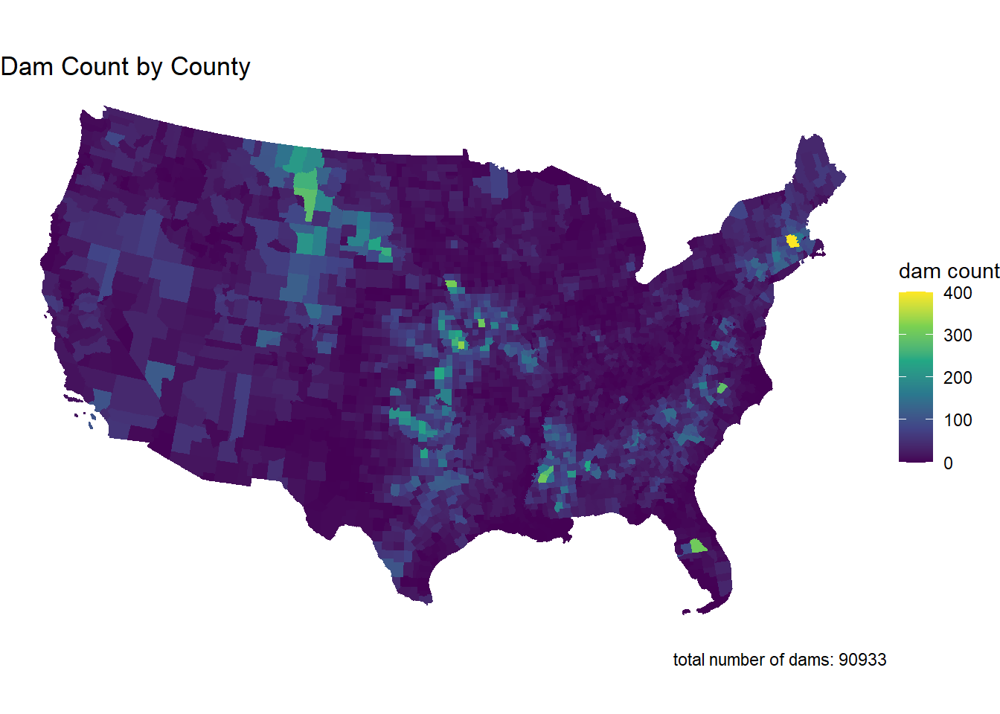
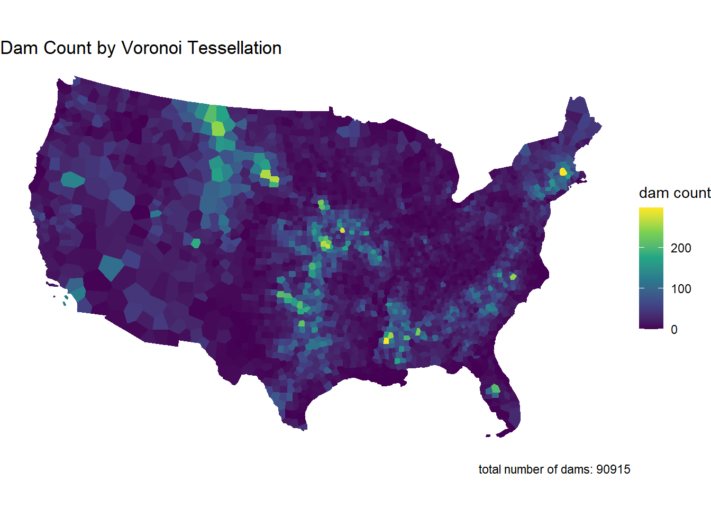
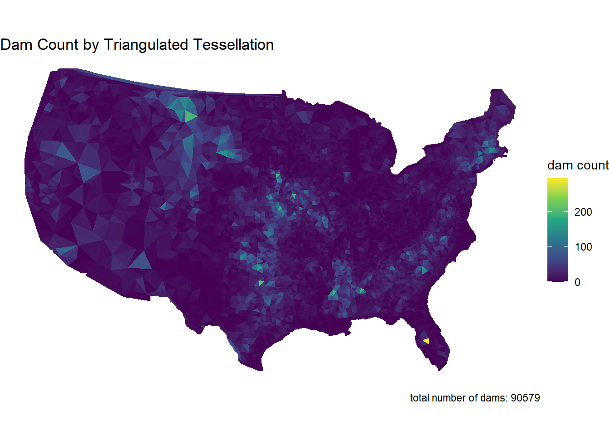
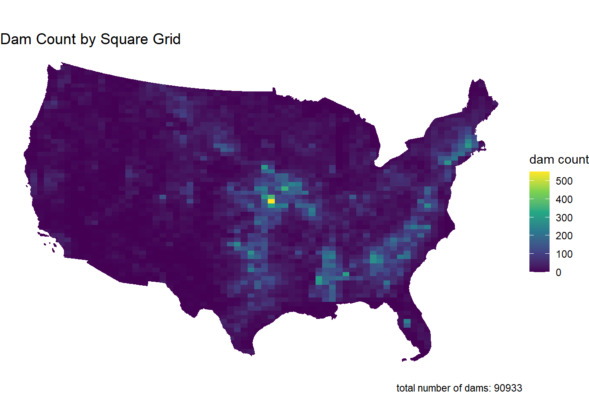
Comment on the influence of the tessellated surface in the visualization of point counts. How does this related to the MAUP problem. Moving forward you will only use one tessellation, which will you chose and why?
While there is not “right” answer, justify your selection here. I am choosing the hexagonal grid tessallation because the areas of highest concentration can be seen in the midwest and south, which most closely resembles the conus map.
Your task is to create point-in-polygon counts for at least 4 of the above dam purposes: I Irrigation H Hydroelectric C Flood Control N Navigation S Water Supply R Recreation P Fire Protection F Fish and Wildlife D Debris Control T Tailings G Grade Stabilization O Other You will use grepl to filter the complete dataset to those with your chosen purpose Remember that grepl returns a boolean if a given pattern is matched in a string grepl is vectorized so can be used in dplyr::filter
For your analysis, choose at least four of the above codes, and describe why you chose them. Then for each of them, create a subset of dams that serve that purpose using dplyr::filter and grepl
I chose Irrigation, Hydroelectric, Flood Control, and Water Supply. I chose these because they are uses for dams that I am most familiar with.
Finally, use your point-in-polygon function to count each subset across your elected tessellation
Now use your plotting function from Q3 to map these counts.
But! you will use gghighlight to only color those tiles where the count (n) is greater then the (mean + 1 standard deviation) of the set
Since your plotting function returns a ggplot object already, the gghighlight call can be added “+” directly to the function.
The result of this exploration is to highlight the areas of the country with the most
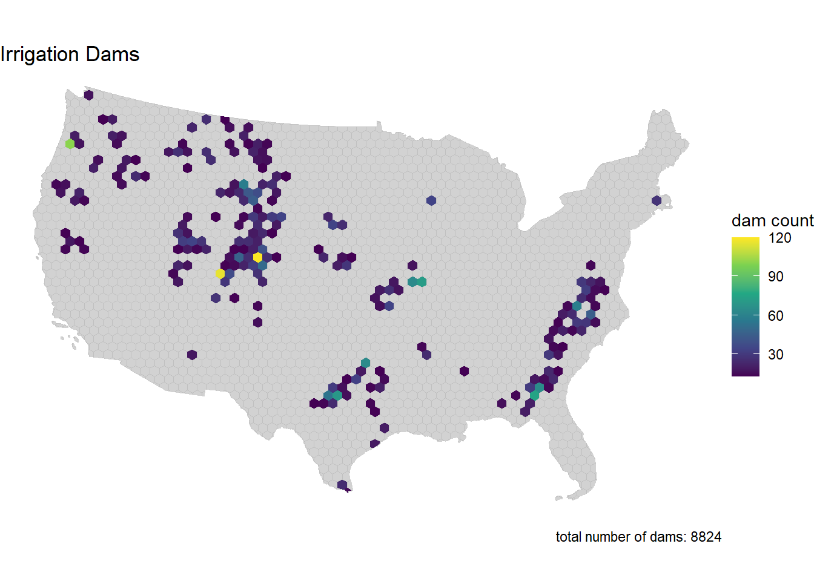
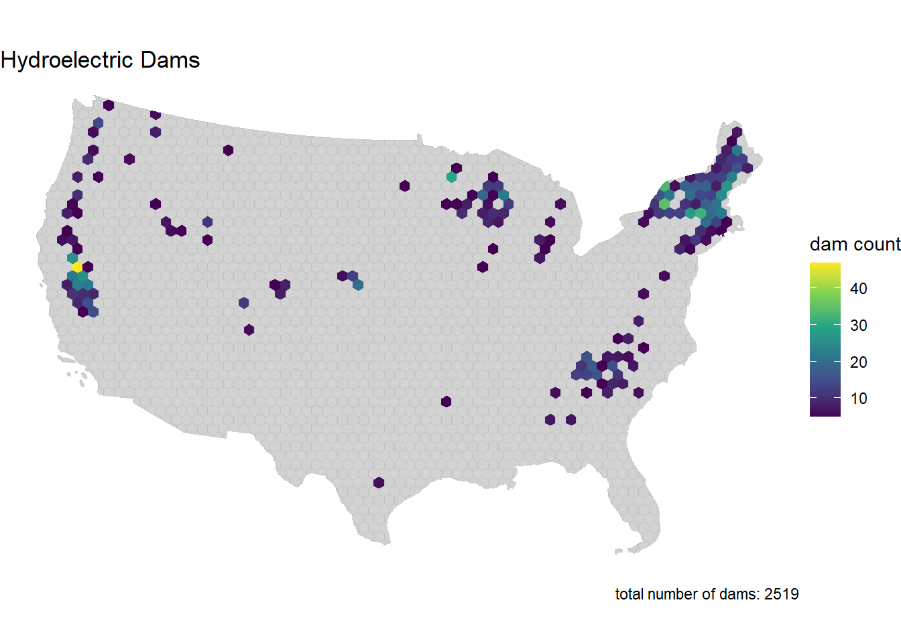
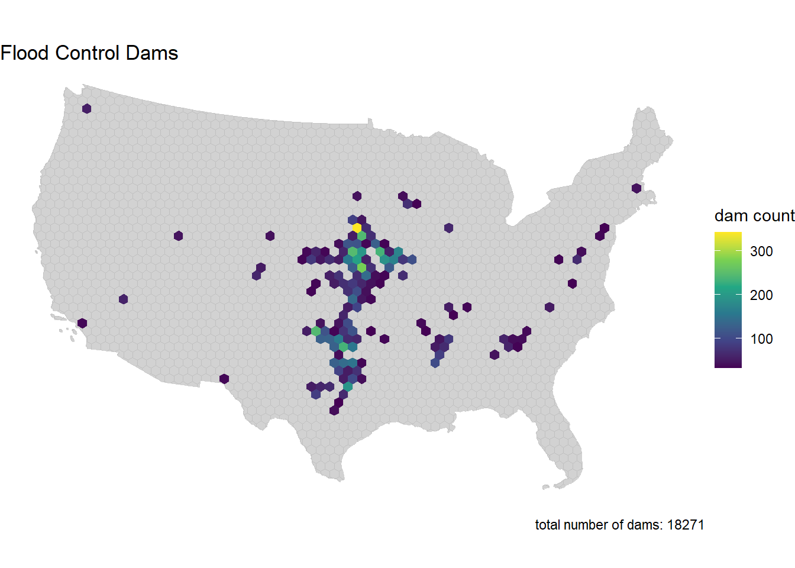
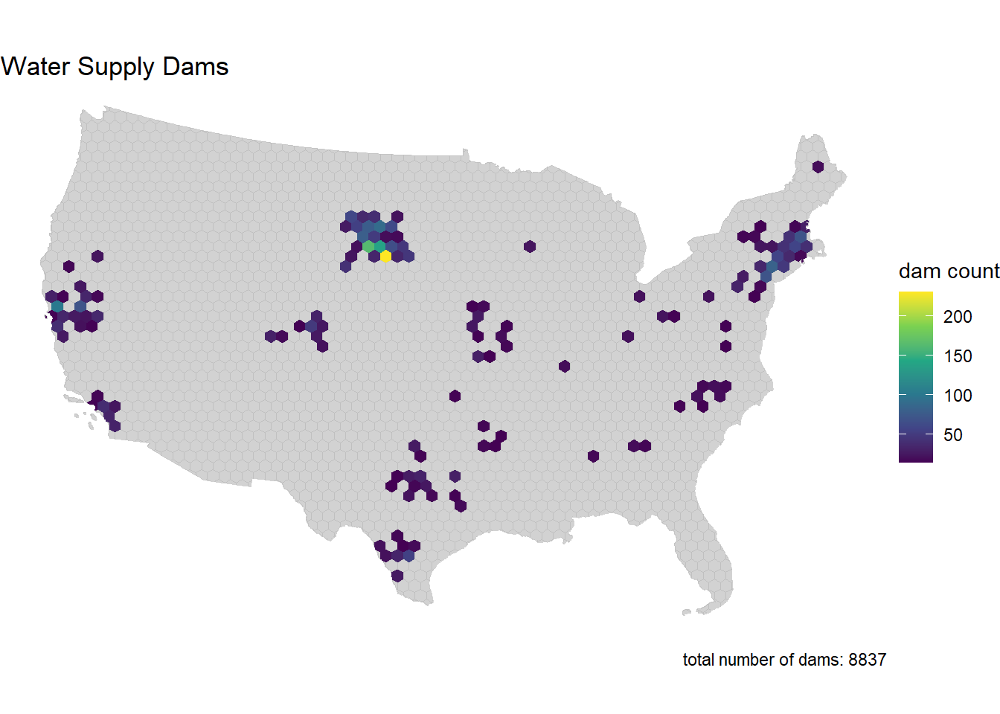
Comment of geographic distribution of dams you found. Does it make sense? How might the tessellation you chose impact your findings? How does the distribution of dams coincide with other geographic factors such as river systems, climate, ect?